Sơ lược về game Chú Bé Rồng Online
Chú Bé Rồng Online – game nhập vai trực tuyến với cốt truyện và nhân vật dựa trên bộ truyện tranh nổi tiếng Nhật Bản Dragon Ball đã từng làm say lòng bao nhiêu thế hệ độc giả Việt Nam. Bạn sẽ chọn theo hành tinh nào, Trái Đất, Na mếc hay Xay da? Cuộc hành trình tìm kiếm ngọc rồng và chống kẻ hung ác sẽ bắt đầu nằm trong tay bạn.
Cùng với sự hướng dẫn của các bậc tiền bối và sự nỗ lực của bản thân, bạn có thể đạt đến sức mạnh kinh hoàng, trở thành những chiến binh siêu hạng. Ngoài ra bạn sẽ không phải chiến đấu đơn độc khi xung quanh bạn là những chiến binh cùng chí hướng, cùng hỗ trợ lẫn nhau đối đầu với các thế lực hắc ám.
Ngọc Rồng là trò chơi trực tuyến đa nền tảng. Bạn có thể chơi được trên máy tính PC Windows, iPhone, Các dòng máy chạy hệ điều hành Android, Windows Phone, và có cả bản Java chạy trên S40, S60 cũ của Nokia. Với chất lượng cao và tốc độ mượt mà trên các loại đường truyền mạng ADSL, 3G, GPRS.
Trò chơi thích hợp với mọi lứa tuổi. Điều khiển trực tiếp nhân vật rất dễ dàng trên màn hình cảm ứng. Khi chơi trên PC bạn chỉ cần dùng chuột, hoặc linh hoạt điều khiển nhân vật với bàn phím cứng điện thoại Nokia S40, S60 cũ.
Giới thiệu chung:
1. Class nhân vật:
Game được làm dựa trên cốt truyện của bộ truyện tranh nổi tiếng Dragon Ball. Khi tham gia vào thế giới Chú Bé Rồng Online, bạn có thể chọn tham gia vào 1 trong 3 hành tinh: Trái Đất, Namếc, Xayda với hình dạng và những khả năng riêng biệt.
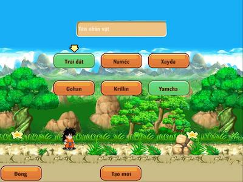
Người trái đất với những kỹ năng đặc biệt khó chịu, và rất mạnh khi đi theo nhóm. Đại diện Gohan, Krillin, Yamcha
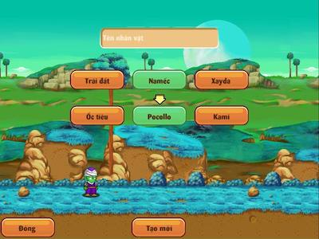
Khả năng tái tạo và hỗ trợ đồng đội đáng kinh ngạc của người Namếc, với đại diện Ốc tiêu, Pocollo và Kami.
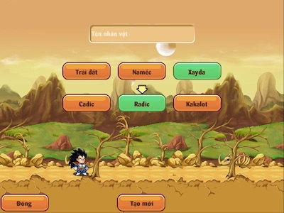
Trải nghiệm sức mạnh kinh hoàng khi chiến đấu đơn độc của các chiến binh Xayda với sự đại diện của Cađic, Rađic và Kakalot.
2. Hệ thống nhà:
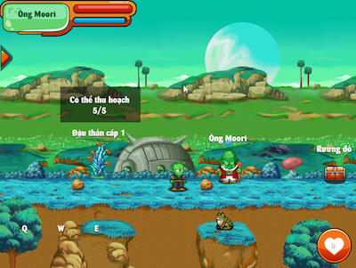
- Nguồn hồi phục KI và HP của các chiến binh chính là bằng đậu thần. Đậu thần có thể nâng cấp được, và mỗi lần nâng cấp sẽ tốn một lượng vàng nhất định. Đậu cấp càng cao thì khả năng hồi phục càng nhiều.
- Rương đồ dùng để chứa tài sản quý giá không tiện mang theo người.
3. Bản đồ và NPC:
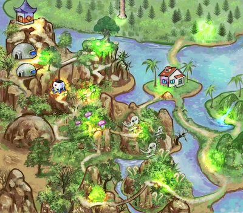
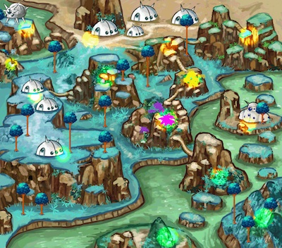
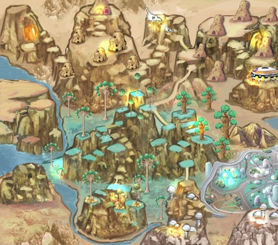
Hệ thống bản đồ phong phú, đặc trưng của từng hành tinh.

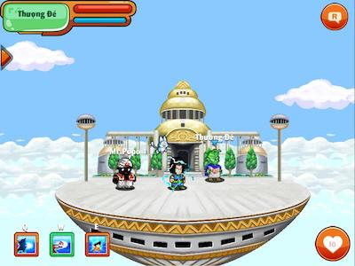
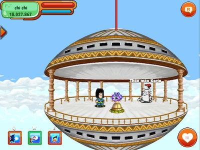
- Những NPC nổi tiếng và gắn liền với cốt truyện của Dragon Ball. Thông qua các NPC đặc biệt như Thượng Đế, Thần Mèo, bạn có khả năng tăng sức mạnh và tiềm năng của nhân vật.
4. Hệ thống chiêu thức, chiến đấu và khả năng nhân vật:
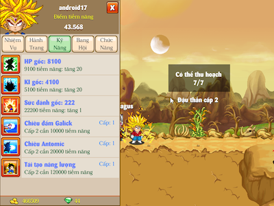
Mỗi hành tinh có những hệ thống chiêu thức khác nhau, tùy vào sở thích và khả năng bản thân, bạn có thể nâng cấp chiêu thức, cũng như tiềm năng bản thân để đạt sức mạnh cao nhất. Cân bằng hài hòa giữa chỉ số bản thân và chiêu thức có thể giúp bạn rất nhiều trong con đường trở thành chiến binh huyền thoại.
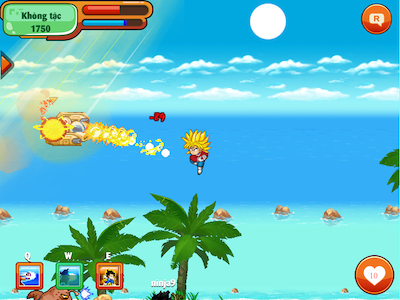
- Hệ thống quái vật phong phú, ở cả trên không lẫn mật đất, thách thức mọi giới hạn của các chiến binh.
5. Nhiệm vụ chính tuyến và nhiệm vụ thành tích:
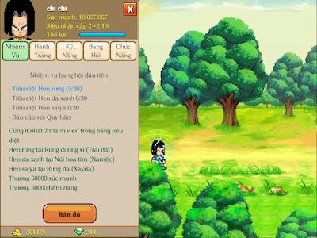
- Game có hệ thống nhiệm vụ chính tuyến phong phú, đi theo cốt truyện. Thông qua những nhiệm vụ này, bạn có thể rèn luyện bản thân và đối đầu với những nhân vật nổi tiếng như Tàu Pảy Pảy, Akkuman, Thượng Đế…
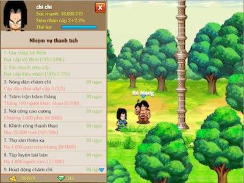
- Ngoài ra còn hệ thống nhiệm vụ thành tích, giúp người chơi có thể kiếm ngọc trong game thông qua các hoạt động hàng ngày như bay, đánh quái…
6. Vật phẩm:
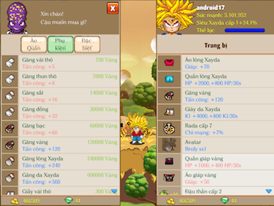
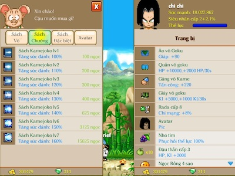
- Bạn có thể kiếm vật phẩm trang bị cho nhân vật của mình bằng cách tích lũy vàng trong game hoặc đánh quái rớt ra. Ngoài ra bạn có thể mua các sách kỹ năng để nâng cấp chiêu thức, cũng như avatar để biến hóa hình dạng khuôn mặt, tạo sự độc nhất cho nhân vật của mình.
6. Video trong trò chơi:
Cứu bé Gohan
Tàu Pảy Pảy (1)
Tàu Pảy Pảy (2)
Tập luyện với khỉ Bubbles
Tập luyện với Popo
Tập luyện với Thuợng Đế
Thách đấu Thần Vũ Trụ
Tiêu diệt Boss Tambourine
Tiêu diệt Boss Drum
7. Hệ thống hỗ trợ bay
Với thú cưỡi , các bạn sẽ được phục hồi KI trong khi bay . Hãy nhanh chóng tìm mua vật phẩm yêu thích và hữu ích trên trong cửa hàng nhé
8. Đệ Tử
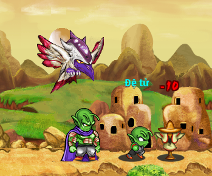
- Chú Bé Rồng Online sẽ xuất hiện 1 boss mới với tên gọi Broly ban đầu mới xuất hiện sẽ rất yếu. Nhưng khi đánh hắn, hắn sẽ mạnh dần lên đến khi hắn biến hình thành siêu xayda tóc vàng và sẽ dắt theo 1 đệ tử. Nếu bạn đánh thắng Broly bạn sẽ nhận được tên đệ tử ấy.
9. Ra mắt các võ đài
- Đại Hội Võ Thuật
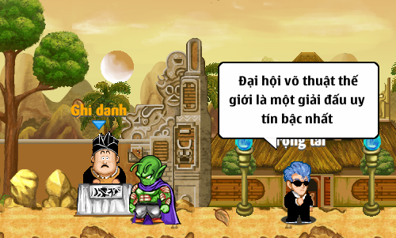
- Tham gia theo từng giải: giải Nhi Đồng (dưới Siêu), giải Siêu cấp 1, giải siêu cấp 2, giải siêu cấp 3, giải siêu cấp 4. Mỗi ngày chỉ có 2 lần tổ chức đại hội. Vị trí Đại Hội Võ Thuật là vách núi Kakarot nhé . Đến Ghi Danh để được biêt thêm thông tin
- Võ đài bà Hạt Mít:
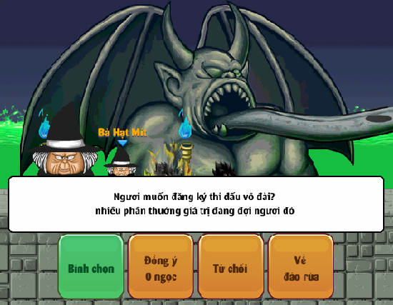
Phần thưởng cho người chiến thắng là 2 phần thưởng cố định, ngoài 2 phần thưởng cố định các đấu sĩ còn có thể nhận được các phần thưởng ngẫu nhiên như:
- Vệ tinh ngẫu nhiên.
- Bùa 1h ngẫu nhiên.
- Vàng.
- Tiềm năng tùy theo sức mạnh của bạn
Bên cạnh đó, khi trận đấu diễn ra khán giả sẽ có cơ hội bình chọn cho bên mà mình thấy có khả năng chiến thắng.
Các cao thủ hùng mạnh trong võ đài Bà Hạt Mít bao gồm :
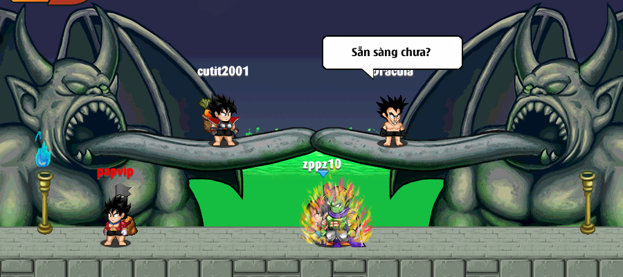
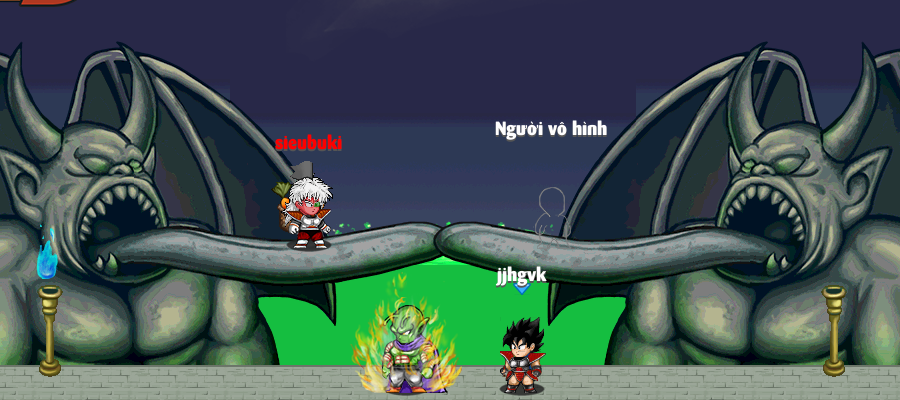
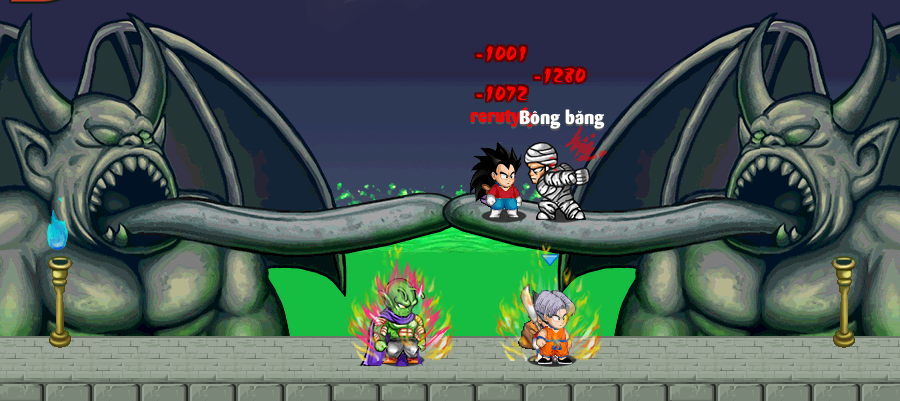
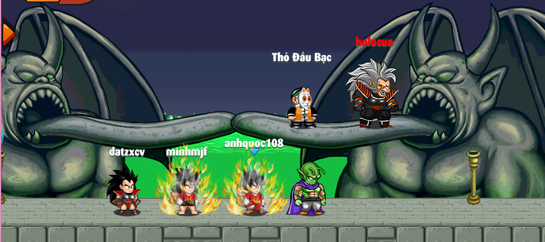
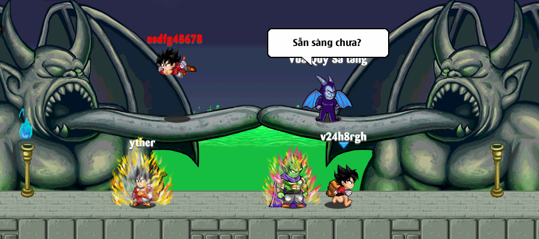
10. Chiêu thức Lưỡng Long Nhất Thể:
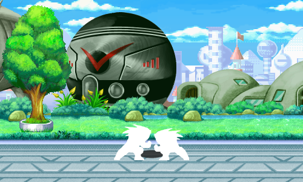
Bao gồm 4 loại:
- Lưỡng long nhất thể: giữ trạng thái biến hình 10 phút, sau khi tách ra phải chờ 10 phút sau mới dùng lại được. (dành cho dân Trái Đất và Xayda)
- Dùng bông tai Porata: ( có bán tại npc Urôn) dùng bông tai thì bất cứ lúc nào cũng hợp thể được và chủ dùng tách ra khi sử dụng lại bông tai, bông tai dùng vĩnh viễn.(dành cho dân Trái Đất và Xayda)
- Hợp thể của người Namek.(dành cho dân Namek)
- Hợp thể vĩnh viễn của người Namek: là đệ tử sẽ mãi mãi mất đi, khi đó toàn bộ sức mạnh của đệ tử sẽ biến thành tiềm năng của sư phụ.(dành cho dân Namek)
11. Trang bị Pha Lê:
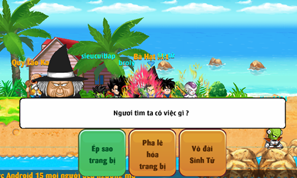
Với món đồ bạn ưng ý (vải thô, lưỡng long, jean, zealot v.v..), hãy đem tới đảo Kame gặp bà hạt mít để được phù phép pha lê hóa cho trang bị của bạn. Những trang bị này sẽ trở nên vip hơn, mạnh hơn khi đã được phù phép. Khi đánh quái sẽ có cơ hội nhận được trang bị pha lê có thể ép pha lê vào. Có 7 loại pha lê, 7 màu sắc và tác dụng khác nhau. Bạn hãy đến gặp bà hạt mít tại đảo kame để ép pha lê vào trang bị pha lê. Hãy nhớ trước khi ép ngọc NPC bà Hạt Mít sẽ cho biết trước thông tin nhé.
12. Giành ngọc rồng sao đen:
Đây là một chức năng hay dành cho bang hội. Chi tiết về sự kiện xem tại diễn đàn.
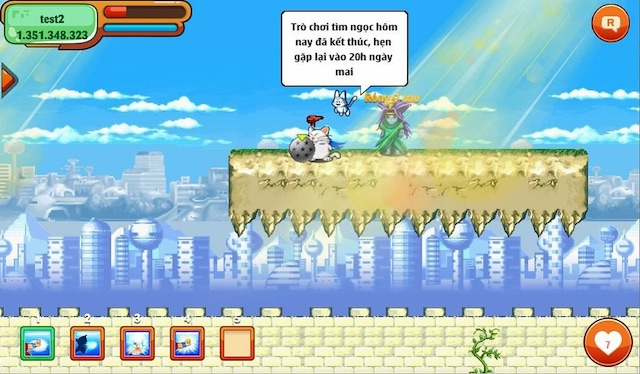
13. Doanh trại độc nhãn
- Để tham gia các bạn đến gặp Lính canh rừng Bambo trái đất. Có 10 cửa ải : Từ tường thành đến Trại độc nhãn và cuối cùng là Tầng 1 , Tầng 2 , Tầng 3 , Tầng 4
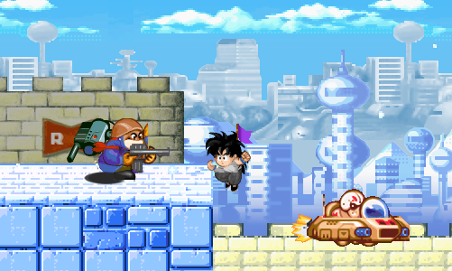
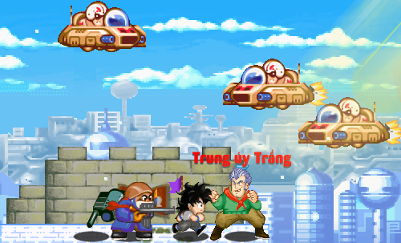
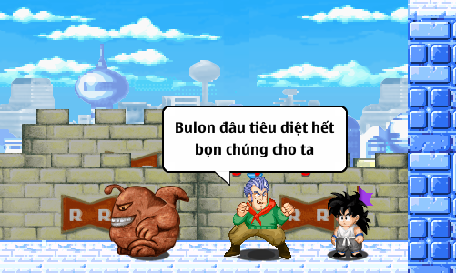
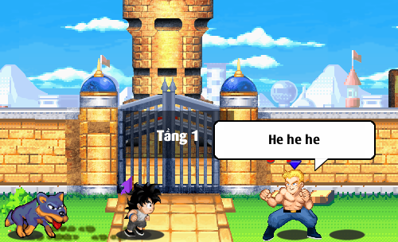
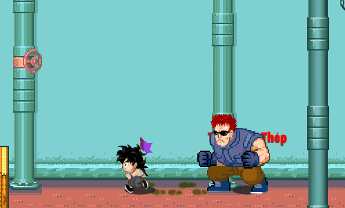
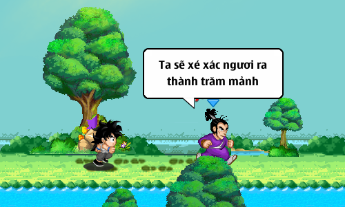
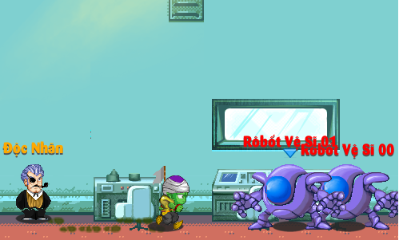
14. Những cập nhật hấp dẫn khác
- Cải trang
Các bạn có thể cải trang thành các nhân vật đặc biệt được yêu thích trong truyện
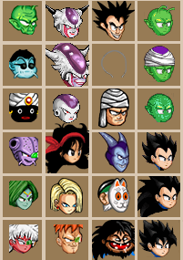
- Qủa cầu Attack Ball
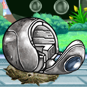
- Vật phẩm vận chuyển với các cư dân chắc đã quá quen thuộc rồi nhỉ, nhưng cái đặc biệt ở vật phẩm này là khi sử dụng sẽ tăng HP, KI luôn nha. Mua 1 lần là dùng vĩnh viễn luôn nhé, hãy sử dụng Chú Bé Rồng Online phiên bản mới nhất và cùng chờ mua vật phẩm này tại Uron nào. Vật phẩm này đi kèm bạn luôn không có trong hành trang bạn đâu
- Capsule kì bí :
Sau khi tới nhiệm vụ 16-17-18 sẽ được Bunma tương lai cho 1 máy dò, máy dò sẽ được bán ở Bunma. Dùng máy dò sẽ có tỷ lệ rơi capsule kì bí. Mở capsule kì bí sẽ nhận được ngẫu nhiên item kì bí hoặc tiền vàng. Capsule kỳ bí có thể ký gửi tại shop ký gửi được nhé.
Giấy phép thiết lập Mạng Xã Hội trên mạng số: 374/GP-BTTTT
do Bộ Thông Tin và Truyền Thông cấp ngày: 07/08/2015